Префектура Сидзуока · Сумпу · еда и ремёсла
Сумпу за один день: лаковые палочки, тороро-дзиру с 1596 года, васаби и ужин в резиденции сёгуна
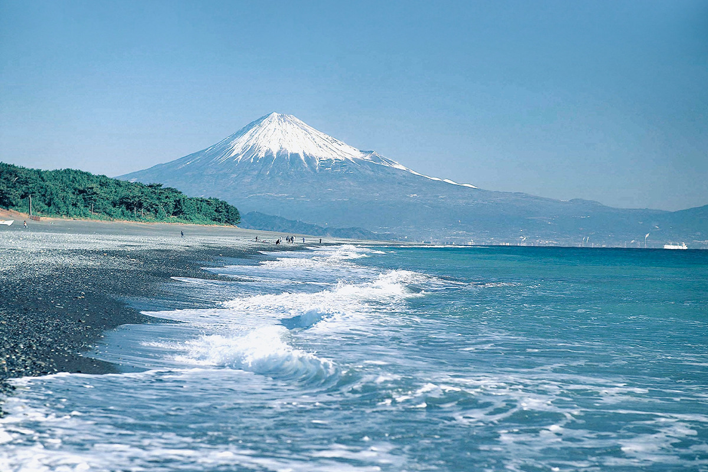
Иэясу Токугава провёл в Сумпу, нынешнем городе Сидзуока, в общей сложности около 25 лет, и замковый город до сих пор живёт тем, что сложилось при нём. Один маршрут по Сумпу: от мастерской лака до ужина в доме последнего сёгуна.
Идея
Гастрономия как способ путешествовать
Префектура Сидзуока стоит между Фудзи, символом Японии, и заливом Суруга, где вылавливают рыбу и морепродукты самых разных видов. С гор Южных Альп сюда стекают подземные воды, богатые минералами, климат мягкий, природа разнообразная. Префектура производит 439 видов сельскохозяйственной, лесной и рыбной продукции и из года в год входит в число лидеров по наградам министра сельского хозяйства. Гурманы в Японии и за её пределами давно называют Сидзуоку «столицей еды».
За местными продуктами стоят традиции, история и привычки этой земли. Поэтому префектура развивает гастрономический туризм: поездки за сезонными вкусами и за историями, которые за ними скрываются. В 2022 году для этого открыли отдельный сайт с описанием районов и готовыми маршрутами.
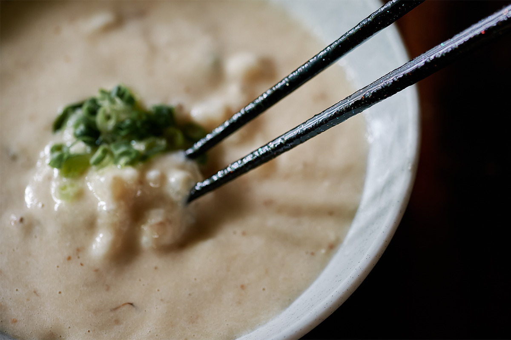
Наш маршрут прошёл по Сумпу. Иэясу Токугава (1543–1616), основатель сёгуната Токугава, объединивший Японию после долгих междоусобиц, прожил здесь в общей сложности около 25 лет. Город стоял на Токайдо, главной дороге между Эдо и Киото, и потому здесь сложилась пёстрая кухня. А ремесленники, которых свезли сюда со всей страны, оставили после себя традиционные ремёсла, живые до сих пор.
Ремесло
«Такумисюку»: палочки из лака
Когда строили замок Сумпу, замковый город, святилище Кунодзан Тосёгу и святилище Сидзуока Сэнгэн-дзиндзя, в Сумпу собрали лучших мастеров со всей страны. Многие остались здесь навсегда, и их умения превратились в местные ремёсла. Это бамбуковые изделия «Суруга сэнсудзи», где тонкие бамбуковые прутья собирают в узор, куклы хина, лаковая посуда и роспись макиэ, лакированные гэта, крашение тканей, столярные изделия без гвоздей, токарная работа по дереву и коробки для еды «мэмпа» из горной деревни Икава.
Познакомиться с ними проще всего в мастерских «Сумпу но кобо Такумисюку». Кроме мастерских здесь работают кофейня The COFFEE ROASTER со своей обжаркой, кафе HACHI&MITSU с сезонной едой и сладостями, магазин «Кото-кото стор» с вкусными продуктами префектуры и галерея-лавка Teto Teto с ремесленными вещами для дома. Дома стоят тесно, как в маленькой деревне. В их отделке использованы лак, бамбук, столярные двери и мебель местных мастеров, так что ремесло Сидзуоки здесь можно увидеть, потрогать и даже понюхать.
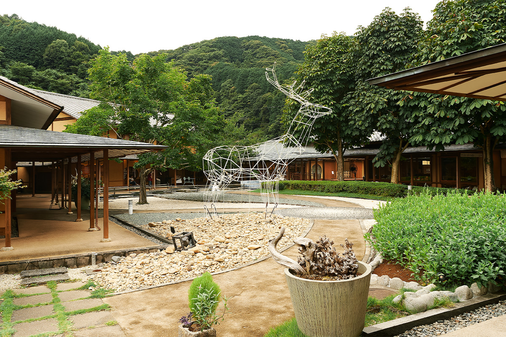
Выбрать можно бамбук, крашение, столярное дело, лак, гэта, керамику или сборку моделей. Мы выбрали шлифовку лака на палочках с ракушечной крошкой. Лаковую посуду в Сумпу делали ещё во времена клана Имагава, правившего здесь в эпоху воюющих провинций, а основы промысла, как считается, сложились в эпоху Эдо.
Палочки заранее покрыты многими слоями лака, а под лаком рассыпана перламутровая крошка. Поверхность шлифуют точильным камнем, пока из глубины не проступит перламутр, а потом полируют до блеска. Занятие длится около 40 минут, шаги простые, справятся и дети, и взрослые. Палочки с мягким цветом лака и мерцанием ракушки потом будут напоминать о поездке за каждой едой.
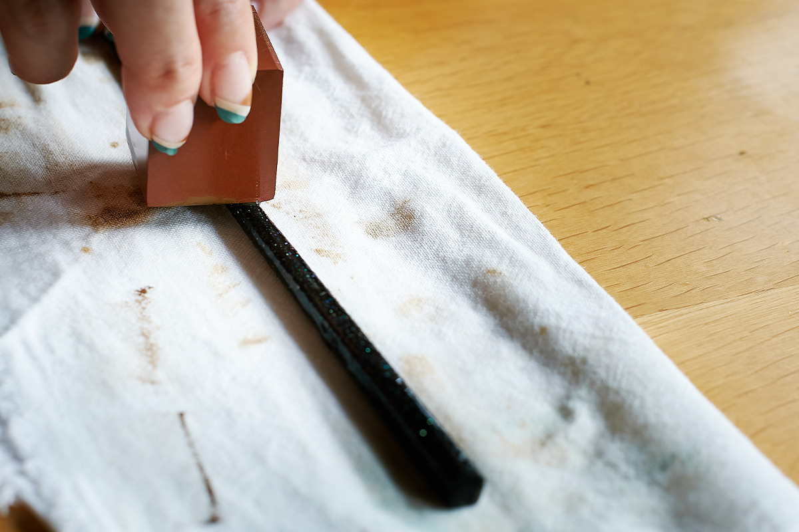
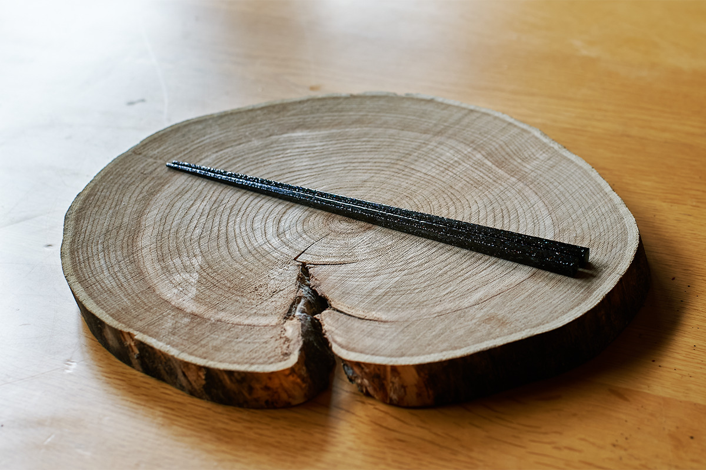
«Сумпу но кобо Такумисюку»
- Адрес
- префектура Сидзуока, город Сидзуока, район Суруга, Марико, 3240-1
- Телефон
- +81 54-256-1521
- Часы работы
- 10:00–19:00
- Выходные
- понедельник
- Сайт
- takumishuku.jp
Обед
«Тёдзия»: тороро-дзиру с гравюры Хиросигэ
Обедать мы поехали в «Тёдзия», старинную закусочную тороро-дзиру. Её можно увидеть на гравюре Хиросигэ Утагавы (1797–1858), мастера пейзажной гравюры укиё-э: в серии «Пятьдесят три станции Токайдо» лист «Марико» изображает «знаменитую чайную», и это она. «Тёдзия» повесила занавеску норэн у входа в 1596 году. У почтовой станции Марико, где она стоит, рос питательный горный ямс дзинэндзё хорошего качества, и путники ценили тороро-дзиру как еду, которая придаёт сил.
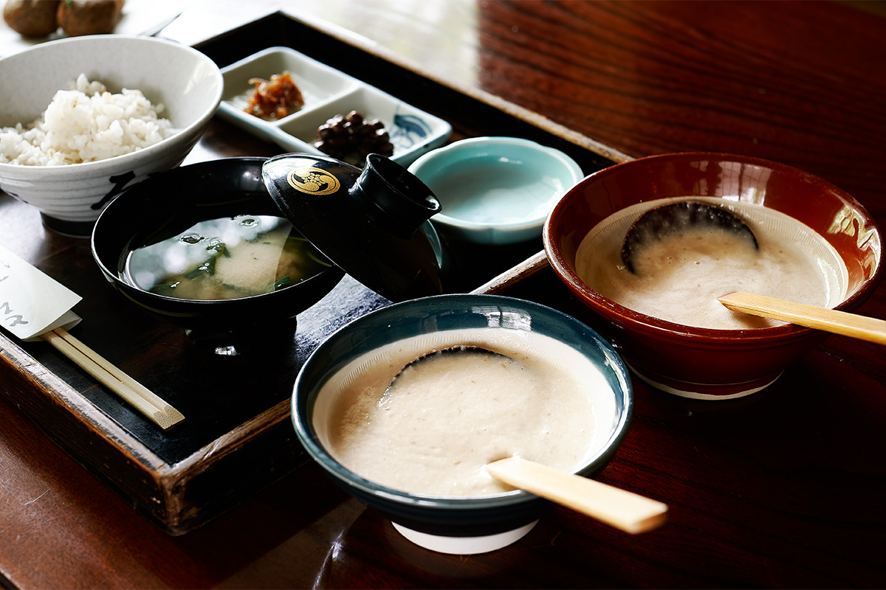
Закусочную ведёт хозяин в 14-м поколении. Вкусы людей меняются, и он ищет для тороро-дзиру лучший вкус своего времени.
«Тёртый ямс мы смешиваем с белым мисо собственного приготовления и бульоном из тунца кацуо из Яидзу, для глубины добавляем отвар от варки тунца и в конце яйцо. Дзинэндзё нам растят местные фермеры, с которыми мы работаем. В Сидзуоке это старый местный сорт, поэтому у него сильный аромат. Полейте тороро-дзиру на рис с ячменём и ешьте смело, не стесняясь: так лучше всего чувствуются ямс, мисо и бульон»
хозяин «Тёдзия» в 14-м поколении
Нынешний дом под соломенной крышей перенёс сюда в 1970–1971 годах хозяин в 12-м поколении: он считал, что начало «Тёдзия» именно в гравюре Хиросигэ. В 2022 году здание получило статус культурного достояния страны.
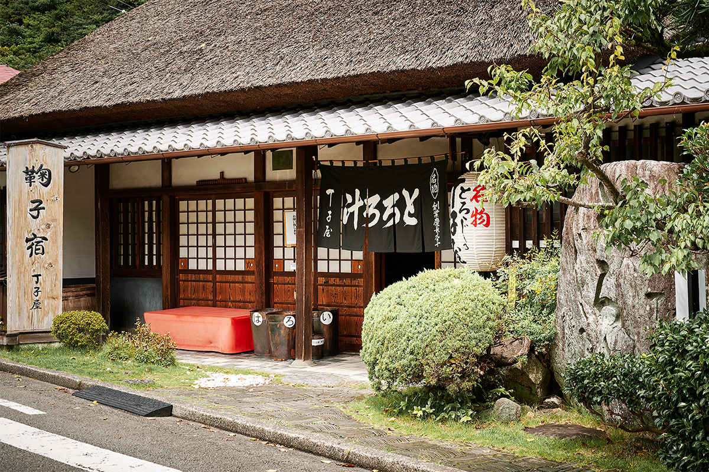
«Думаю, в гравюре Хиросигэ он видел наше будущее. На ней есть гости, есть те, кто выращивает дзинэндзё, и есть работница с младенцем за спиной, то есть будущее. Чтобы „Тёдзия“ оставалась собой, я тоже буду беречь этот пейзаж»
хозяин «Тёдзия» в 14-м поколении
Дзинэндзё для «Тёдзия» главное во вкусе, и без фермеров этот пейзаж не сохранить. Одно из хозяйств, которые выращивают ямс для закусочной, называется «Сугита фарм».
«Дзинэндзё мы отбираем дважды: сначала клубеньки мукаго, из которых растят посадочный материал, потом семенные клубни. До урожая проходит три года. Работа долгая и кропотливая, но без неё не вырастить ароматный, белый и вкусный ямс. Мы воссоздаём на поле условия, в которых дзинэндзё растёт в дикой природе, и каждый день стараемся сделать его лучше»
фермер «Сугита фарм»
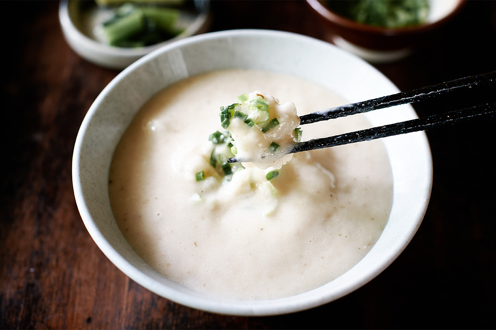
К тороро-дзиру в рамках гастрономического маршрута подают сётю «Мукаго но мэгури». Его делают из клубеньков мукаго, которые не прошли отбор на ферме, так что в одном обеде собрана вся история этого блюда.
«Тёдзия»
- Адрес
- префектура Сидзуока, город Сидзуока, район Суруга, Марико, 7-10-10
- Телефон
- +81 54-258-1066
- Часы работы
- будни 11:00–14:00, выходные и праздники 11:00–15:00 и 16:30–19:00 (последний заказ)
- Сайт
- chojiya.info
Васаби
Утоги: где васаби начали выращивать
Дальше мы поднялись в горную деревню Утоги, на север города Сидзуока. Здесь, как считается, родилось выращивание васаби. Около 400 лет назад дикую васаби из верховьев ручья Утоги пересадили к роднику на краю деревни, а в 1607 году староста деревни поднёс васаби Иэясу. По преданию, Иэясу так понравились её аромат и острота, что он запретил вывозить растение за пределы края.
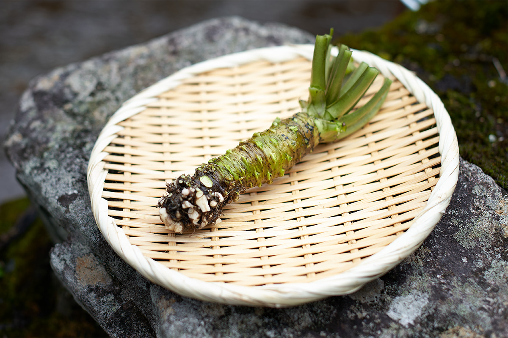
В наше время васаби из Утоги ценят лучшие повара. Деревню окружают зелёные горы, а среди домов разбросаны васабиевые поля, которые вместе называют «полями васаби Утоги». Склоны здесь крутые, поэтому поля сложены уступами из камня по способу «татами-иси», и по ним пускают воду из родников.
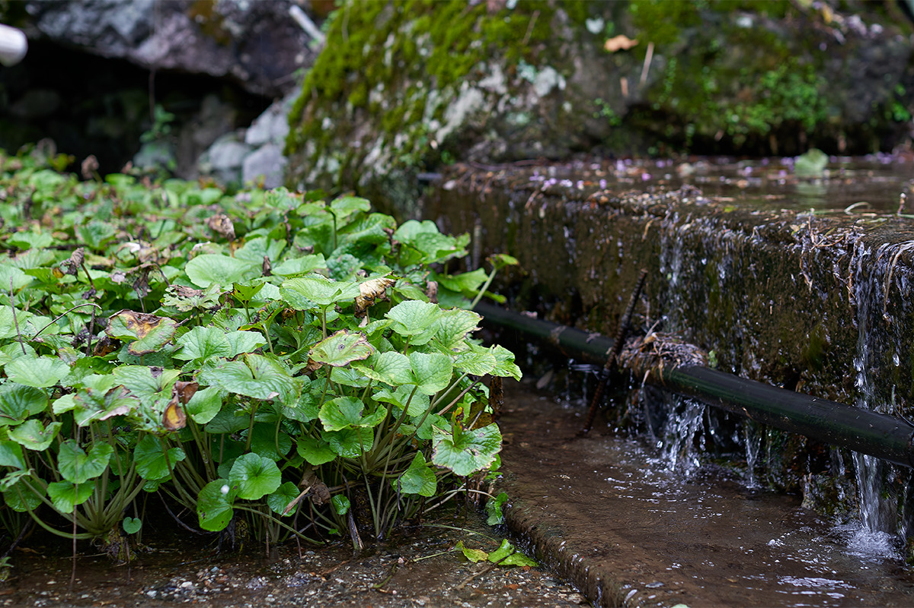
Подготовка поля, посадка, тень от солнца, прополка, защита от холода, сбор, сортировка, очистка корней от волосков, последняя промывка: работы у васаби очень много. До урожая проходят полтора года, и почти всё делается руками. «Без любви к васаби этим не займёшься», смеётся хозяин «Васаби но мондзэн», старейшего васабиевого хозяйства Японии, в 16-м поколении.
Нам разрешили выкопать васаби мотыгой и смыть землю чистой водой.
«В Утоги васаби растёт медленно, поэтому корень твёрдый, а бугорки на нём сидят плотно. От этого и аромат, и цвет, и острота, и вязкость у неё отличные»
хозяин «Васаби но мондзэн»
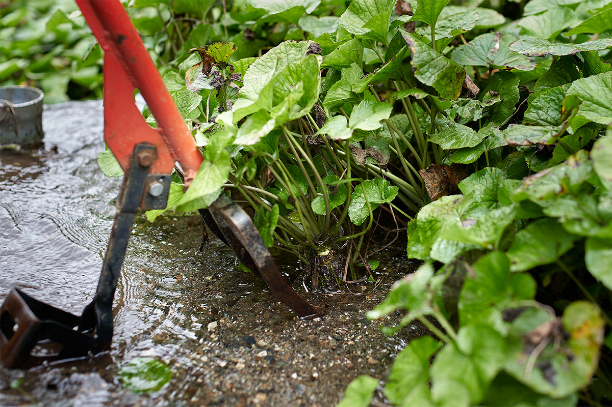
Эту васаби, по его словам, вечером подадут в рётэе «Фугэцуро», так что ужина мы ждали с нетерпением. Встретиться с теми, кто выращивает продукты, лицом к лицу: в этом одна из главных радостей такого маршрута.
Святилище
Сидзуока Сэнгэн-дзиндзя и лак Окусидзу
Чтобы ближе узнать историю Сумпу и попросить о благополучной дороге, мы зашли в святилище Сидзуока Сэнгэн-дзиндзя, которое горожане ласково зовут «Осэнгэн-сан». Это общее название для трёх главных святилищ: Камбэ-дзиндзя, Сэнгэн-дзиндзя и Оотоси-миоя-дзиндзя, и четырёх малых святилищ на их территории. Вместе с остальными 33 святилищами внутри ограды здесь 40 святилищ и 56 божеств. Просят у них о разном: о долгой жизни, о встрече с суженым, о защите от бед, о детях и лёгких родах, о согласии в семье, о процветании дела. Каждый идёт к тому божеству, которое ему нужно.
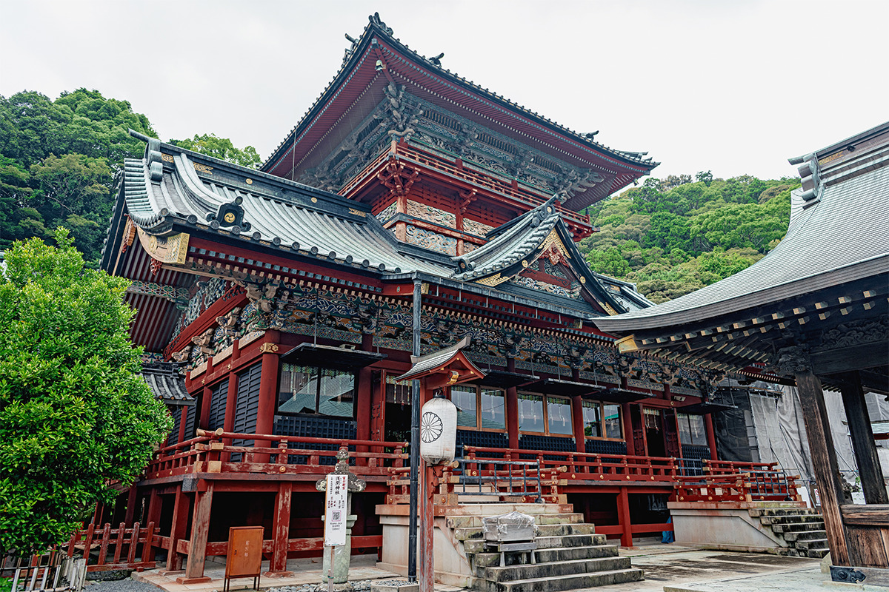
Иэясу Токугава, которого в детстве звали Такэтиё, прошёл здесь обряд совершеннолетия, и потому род Токугава щедро опекал святилище. Во второй половине XVIII века постройки пострадали от пожаров, и с 1804 года их отстраивали около 60 лет, потратив огромную сумму в 100 000 золотых рё. Большой молитвенный зал Камбэ-дзиндзя и Сэнгэн-дзиндзя высотой 25 метров построен в особом стиле «сэнгэн-дзукури». Ворота-башня, залы и другие постройки покрыты лаком и цветной резьбой, и все 26 зданий признаны важным культурным достоянием страны.
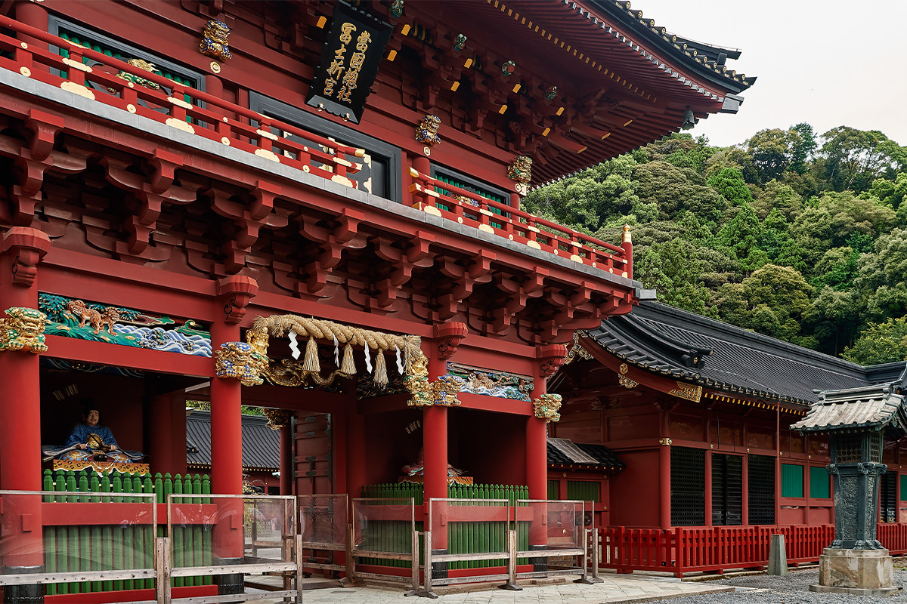
При этом снаружи постройки святилища изначально лаком не покрывали.
«Почему их начали покрывать лаком, точно неизвестно. Но, по-моему, раз Иэясу, называвший себя потомком рода Минамото, почитают здесь, в святилище Маритэн, то и здания решили покрыть лаком, как святилище Уса-хатиман, которое Минамото чтили как родовое»
священник святилища
В 2014 году в святилище началась большая реставрация. В 2020 году закончили перекрывать лаком ворота-башню, и на неё ушло около 820 кг лака. В 2015 году Агентство по делам культуры распорядилось реставрировать национальные сокровища и важное культурное достояние только японским лаком, но производство его сильно упало. По числу лаковых построек в этих категориях префектура Сидзуока делит второе место в стране с Киото, и всё же японский лак сюда почти не доходит.
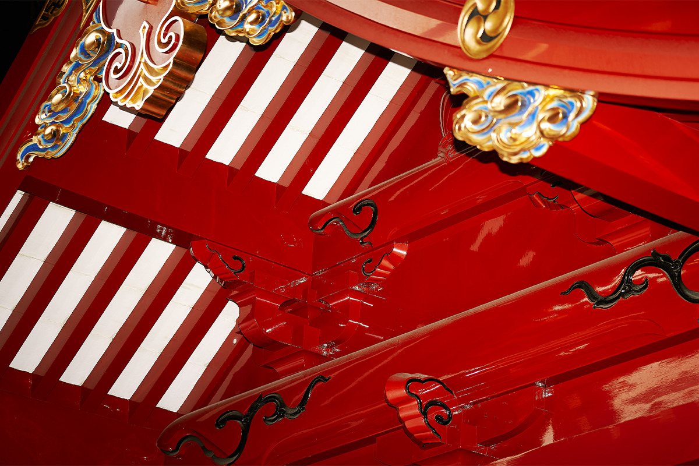
«Раз так, будем сами растить лак для Сидзуоки», решили лесники, мастера традиционных ремёсел и хранители культурного наследия. В 2019 году они создали совет «Окусидзу уруси но сато». Окусидзу называют горные районы города Сидзуока: совет сажает лаковые деревья как возобновляемый ресурс и бережёт пейзажи этих мест.
«Сок с дерева можно собирать только через 10–15 лет, и нужны мастера, которые умеют его собирать, очищать и наносить. Пока деревья растут, мы готовим мастеров и придумываем вещи: украшения и мелочи из ярко-жёлтой древесины лакового дерева, ткани, крашенные с лаком, кофе из обжаренных семян лакового дерева. Лак полон возможностей»
руководитель секретариата совета
Святилище Сидзуока Сэнгэн-дзиндзя
- Адрес
- префектура Сидзуока, город Сидзуока, район Аой, Миягасаки-тё, 102-1
- Телефон
- +81 54-245-1820
- Часы работы
- 7:00–18:00 (окошко амулетов 9:00–17:00)
- Цены / Вход
- бесплатно
Ужин
«Фугэцуро»: кухня по 24 сезонам
Последняя точка маршрута: ужин в рётэе «Фугэцуро», который работает с 1891 года. Он стоит на месте усадьбы Ёсинобу Токугавы (1837–1913), последнего сёгуна, вернувшего власть императору в 1867 году. После этого Ёсинобу прожил здесь больше двадцати лет. Он увлекался масляной живописью, фотографией, велосипедом, охотой, и в доме выставлено много вещей, по которым можно представить его характер.
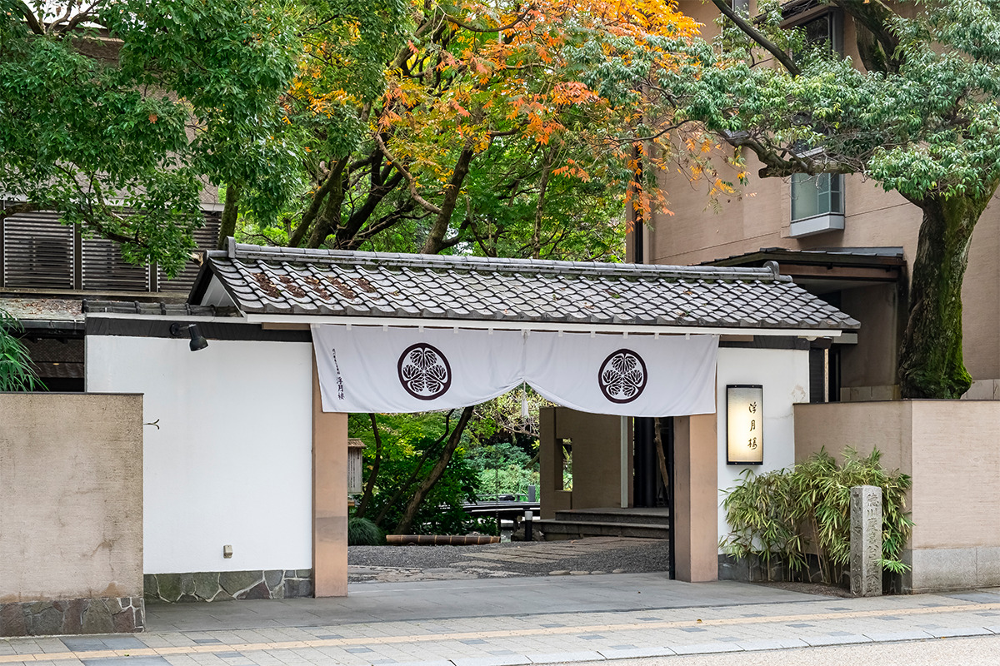
В «Фугэцуро» живут по 24 сезонам старого календаря. Чтобы гости почувствовали, как меняются вкусы Сидзуоки, меню кайсэки здесь меняют каждый месяц, а первую закуску каждые 15 дней. Готовит восьмой по счёту шеф-повар «Фугэцуро».
«Мы бережём традицию, но не останавливаемся и хотим показать новую японскую кухню. В Сидзуоке много продуктов, и у каждого сильный характер. И рыба, и овощи приходят к нам утром, только что собранные. Будет радостно, если через эти блюда гости почувствуют время года»
шеф-повар «Фугэцуро»
На тарелках рыба и морепродукты прямо с причала порта Когава в Яидзу, говядина «Сидзуока вагю» от чёрных японских коров, курица «Фугаку хаккэй», шпинат и арахис с местных полей. Каждый продукт раскрыт полностью, а вкус получается чистым и тонким: это заслуга отточенного мастерства шефа.
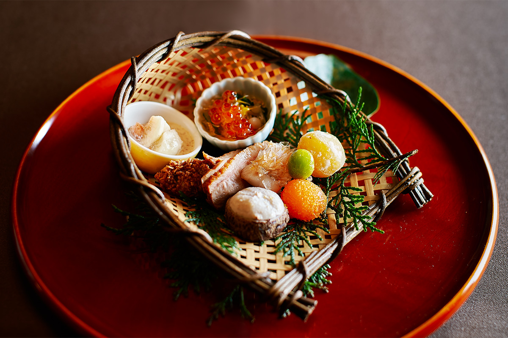
Васаби, которую мы выкопали в Утоги, подали к «арахисовому тофу из Фудзиномии с васаби из Утоги». «В ней нет водянистости, она ароматная и даже сладкая. Васаби из Утоги правда вкусная», подтверждает шеф. К ужину подбирают сакэ, в том числе местное, из Сидзуоки, и еда и напиток подчёркивают друг друга.
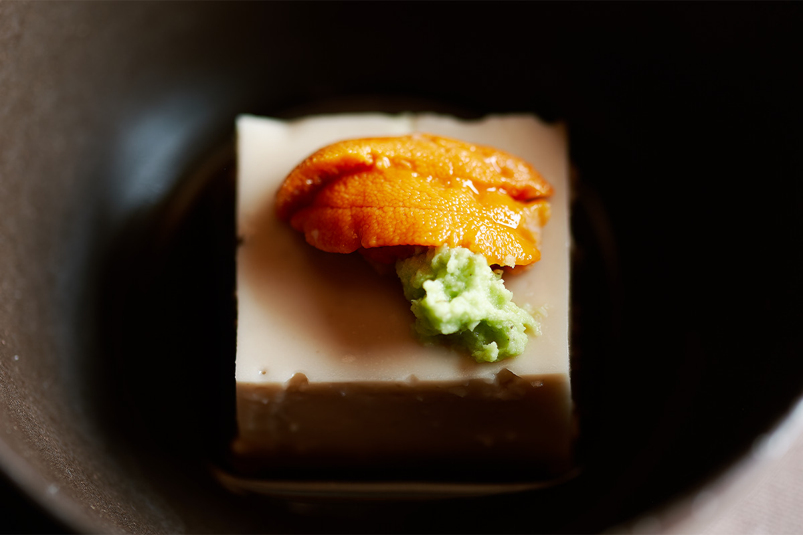
«Наш девиз: лучшее гостеприимство в лучшем саду. Смотрите на сад, который меняется с каждым сезоном, и наслаждайтесь едой, которая следует за временами года»
шеф-повар «Фугэцуро»
За окном лежит прогулочный сад с прудом. Его заложил Ёсинобу, пригласив знаменитого садовника Дзихэя Огаву (1860–1933), мастера из Киото, по чьим проектам разбиты многие сады эпохи Мэйдзи. Глядя на этот сад, хочется вернуться сюда через сезон, чтобы попробовать то, что принесёт следующее время года.
«Фугэцуро»
- Адрес
- префектура Сидзуока, город Сидзуока, район Аой, Конъя-мати, 11-1
- Телефон
- +81 54-252-0131
- Часы работы
- 10:00–21:00 (будни, выходные и праздники)
- Выходные
- летние каникулы, новогодние дни, нерегулярные выходные
- Сайт
- fugetsuro.co.jp
Дальше
Не только Сумпу
У префектуры Сидзуока много лиц. Озеро Хамана кормит, как огромный природный садок, на Идзу море и геопарк, в западном районе Энсю живёт культура ферментации. Сумпу только начало: чем больше знаешь историй о продуктах и кухне, тем интереснее путешествовать по Сидзуоке.
Фото: Хидэюки Хаяси.